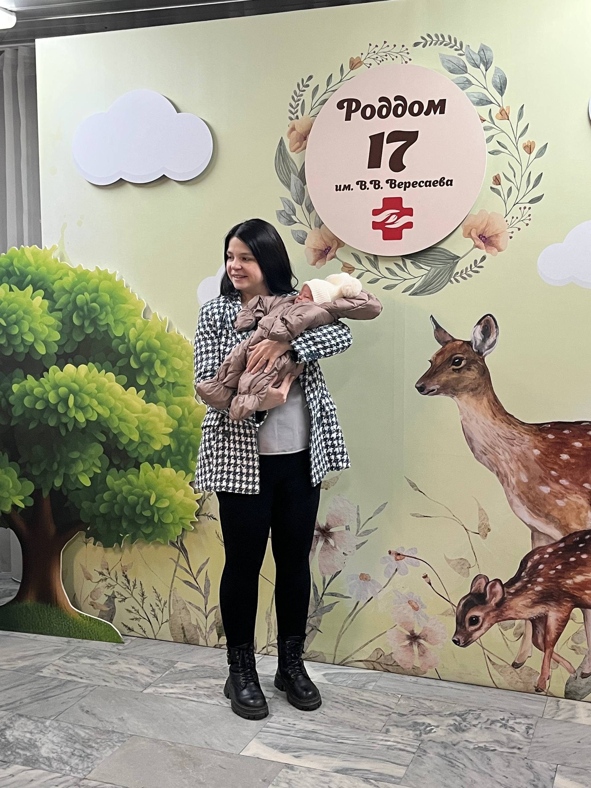
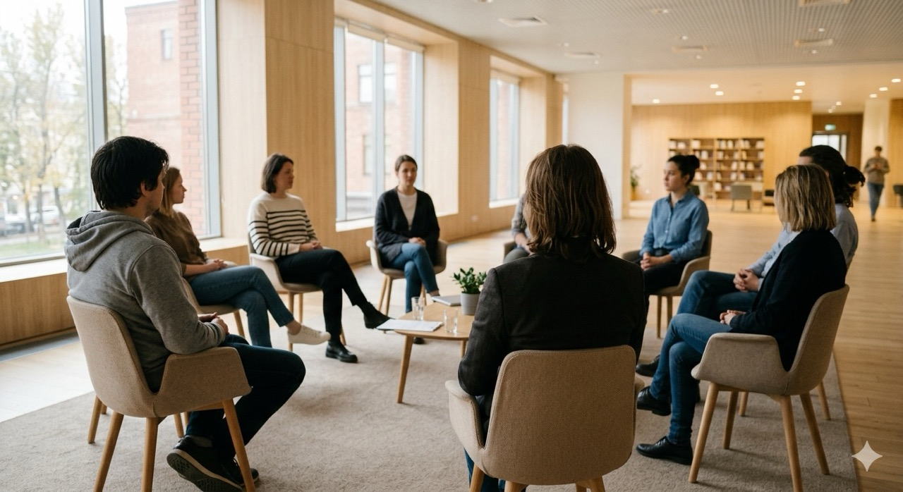

photo-kids.jpg · 16:10
Дети · 7–11 лет
Онлайн-программа
для детей
Внимание, память, мышление и уверенность в себе — через игры, разговоры и обсуждения. Летом будет пробный интенсив.
Помогаю разобраться в себе — в реакциях, в отношениях с теми, кто рядом.
Записаться на консультациюДети устроены странно: они слышат состояние, а не слова. Ваша усталость, тревога, напряжение — они это чувствуют, даже если вы молчите. Уверенность в себе, эмоциональная устойчивость, ощущение «со мной всё в порядке» — всё это формируется из того, каким родитель бывает рядом изо дня в день. Из обычных вечеров. Из вторников.
Работа над собой — со срывами, тревогой, виной — это самое прямое, что вы можете сделать для ребёнка. Даже если со стороны выглядит как что-то личное.
Ребёнку передаётся многое. Но сильнее всего — то, как вы относитесь к самой себе.
На сессии нет домашних заданий и готовых ответов. Есть час, когда можно говорить честно и не подбирать слова. Просто чтобы вместе разобраться, что происходит.
Иногда достаточно,
чтобы вас наконец услышали.

Несколько лет назад моя жизнь перестала складываться так, как раньше.
Психология помогла собрать жизнь заново — ту, в которой я снова это я. Новые отношения, дело, в которое верю, и два месяца назад — сын.
Поэтому родителей я понимаю изнутри — прямо сейчас сама всё это проживаю.
Я не про «как надо». Я про то, как есть — и как может быть.
Чаще всего ко мне приходят родители, но не только. Если вы не родитель, а что-то откликнулось — это тоже про вас. Я работаю и со взрослыми без детей.
Можно держаться дальше.
Или попробовать иначе.
с поддержкой, без давления, не одной
Записаться на консультациюПомимо индивидуальной работы — программы для детей и встречи, где родителям можно не держать лицо.
Внимание, память, мышление и уверенность в себе — через игры, разговоры и обсуждения. Летом будет пробный интенсив.

Встречи, где можно не держать лицо. Говорим о воспитании, об усталости, о том, что обычно остаётся за кадром.
Напишите пару слов о себе и о том, с чем хотите прийти. На первой встрече знакомимся и обсуждаем запрос — что происходит, чего хочется, как могла бы выглядеть наша работа. Сейчас я в завершающей стадии обучения и работаю под супервизией: сложные моменты разбираю со старшими коллегами.